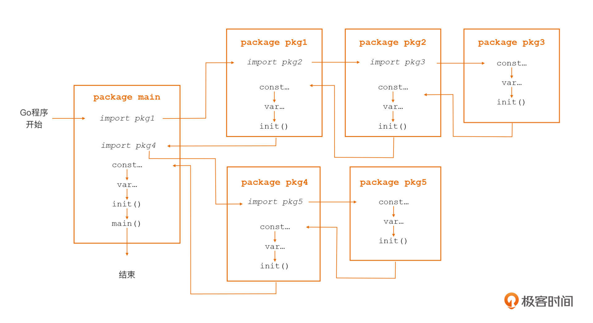

- 00 开篇词 这样入门Go，才能少走弯路.md.html
- 01 前世今生：你不得不了解的Go的历史和现状.md.html
- 02 拒绝“Hello and Bye”：Go语言的设计哲学是怎么一回事？.md.html
- 03 配好环境：选择一种最适合你的Go安装方法.md.html
- 04 初窥门径：一个Go程序的结构是怎样的？.md.html
- 05 标准先行：Go项目的布局标准是什么？.md.html
- 06 构建模式：Go是怎么解决包依赖管理问题的？.md.html
- 07 构建模式：Go Module的6类常规操作.md.html
- 08 入口函数与包初始化：搞清Go程序的执行次序.md.html
- 09 即学即练：构建一个Web服务就是这么简单.md.html
- 10 变量声明：静态语言有别于动态语言的重要特征.md.html
- 11 代码块与作用域：如何保证变量不会被遮蔽？.md.html
- 12 基本数据类型：Go原生支持的数值类型有哪些？.md.html
- 13 基本数据类型：为什么Go要原生支持字符串类型？.md.html
- 14 常量：Go在“常量”设计上的创新有哪些？.md.html
- 15 同构复合类型：从定长数组到变长切片.md.html
- 16 复合数据类型：原生map类型的实现机制是怎样的？.md.html
- 17 复合数据类型：用结构体建立对真实世界的抽象.md.html
- 18 控制结构：if的“快乐路径”原则.md.html
- 19 控制结构：Go的for循环，仅此一种.md.html
- 20 控制结构：Go中的switch语句有哪些变化？.md.html
- 21 函数：请叫我“一等公民”.md.html
- 22 函数：怎么结合多返回值进行错误处理？.md.html
- 23 函数：怎么让函数更简洁健壮？.md.html
- 24 方法：理解“方法”的本质.md.html
- 25 方法：方法集合与如何选择receiver类型？.md.html
- 26 方法：如何用类型嵌入模拟实现“继承”？.md.html
- 27 即学即练：跟踪函数调用链，理解代码更直观.md.html
- 28 接口：接口即契约.md.html
- 29 接口：为什么nil接口不等于nil？.md.html
- 30 接口：Go中最强大的魔法.md.html
- 31 并发：Go的并发方案实现方案是怎样的？.md.html
- 32 并发：聊聊Goroutine调度器的原理.md.html
- 33 并发：小channel中蕴含大智慧.md.html
- 34 并发：如何使用共享变量？.md.html
- 35 即学即练：如何实现一个轻量级线程池？.md.html
- 36 打稳根基：怎么实现一个TCP服务器？（上）.md.html
- 37 代码操练：怎么实现一个TCP服务器？（中）.md.html
- 38 成果优化：怎么实现一个TCP服务器？（下）.md.html
- 39 驯服泛型：了解类型参数.md.html
- 40 驯服泛型：定义泛型约束.md.html
- 41 驯服泛型：明确使用时机.md.html
- 元旦快乐 这是一份暂时停更的声明.md.html
- 加餐 作为Go Module的作者，你应该知道的几件事.md.html
- 加餐 如何拉取私有的Go Module？.md.html
- 加餐 我“私藏”的那些优质且权威的Go语言学习资料.md.html
- 加餐 聊聊Go 1.17版本的那些新特性.md.html
- 加餐 聊聊Go语言的指针.md.html
- 加餐 聊聊最近大热的Go泛型.md.html
- 大咖助阵 叶剑峰：Go语言中常用的那些代码优化点.md.html
- 大咖助阵 大明：Go泛型，泛了，但没有完全泛.md.html
- 大咖助阵 孔令飞：从小白到“老鸟”，我的Go语言进阶之路.md.html
- 大咖助阵 徐祥曦：从销售到分布式存储工程师，我与 Go 的故事.md.html
- 大咖助阵 曹春晖：聊聊 Go 语言的 GC 实现.md.html
- 大咖助阵 海纳：聊聊语言中的类型系统与泛型.md.html
- 期中测试 一起检验下你的学习成果吧.md.html
- 用户故事 罗杰：我的Go语言学习之路.md.html
- 结束语 和你一起迎接Go的黄金十年.md.html
- 结课测试 快来检验下你的学习成果吧！.md.html
- 捐赠
08 入口函数与包初始化：搞清Go程序的执行次序
你好，我是Tony Bai。
在刚开始学习Go语言的时候，我们可能经常会遇到这样一个问题：一个Go项目中有数十个Go包，每个包中又有若干常量、变量、各种函数和方法，那Go代码究竟是从哪里开始执行的呢？后续的执行顺序又是什么样的呢？
事实上，了解这门语言编写应用的执行次序，对我们写出结构合理、逻辑清晰的程序大有裨益，无论你用的是归属为哪种编程范式（Paradigm）的编程语言，过程式的、面向对象的、函数式的，或是其他编程范式的，我都建议你深入了解一下。
所以今天这节课，我就带你来了解一下Go程序的执行次序，这样在后续阅读和理解Go代码的时候，你就好比拥有了“通往宝藏的地图”，可以直接沿着Go代码执行次序这张“地图”去阅读和理解Go代码了，不会在庞大的代码库中迷失了。
Go程序由一系列Go包组成，代码的执行也是在各个包之间跳转。和其他语言一样，Go也拥有自己的用户层入口：main函数。这节课我们就从main函数入手，逐步展开，最终带你掌握Go程序的执行次序。
那么下面，我们就先来看看Go应用的入口函数。
main.main函数：Go应用的入口函数
Go语言中有一个特殊的函数：main包中的main函数，也就是main.main，它是所有Go可执行程序的用户层执行逻辑的入口函数。Go程序在用户层面的执行逻辑，会在这个函数内按照它的调用顺序展开。
main函数的函数原型是这样的：
package main
func main() {
// 用户层执行逻辑
... ...
}
你会发现，main函数的函数原型非常简单，没有参数也没有返回值。而且，Go语言要求：可执行程序的main包必须定义main函数，否则Go编译器会报错。在启动了多个Goroutine（Go语言的轻量级用户线程，后面我们会详细讲解）的Go应用中，main.main函数将在Go应用的主Goroutine中执行。
不过很有意思的是，在多Goroutine的Go应用中，相较于main.main作为Go应用的入口，main.main函数返回的意义其实更大，因为main函数返回就意味着整个Go程序的终结，而且你也不用管这个时候是否还有其他子Goroutine正在执行。
另外还值得我们注意的是，除了main包外，其他包也可以拥有自己的名为main的函数或方法。但按照Go的可见性规则（小写字母开头的标识符为非导出标识符），非main包中自定义的main函数仅限于包内使用，就像下面代码这样，这是一段在非main包中定义main函数的代码片段：
package pkg1
import "fmt"
func Main() {
main()
}
func main() {
fmt.Println("main func for pkg1")
}
你可以看到，这里main函数就主要是用来在包pkg1内部使用的，它是没法在包外使用的。
好，现在我们已经了解了Go应用的入口函数main.main的特性。不过对于main包的main函数来说，你还需要明确一点，就是它虽然是用户层逻辑的入口函数，但它却不一定是用户层第一个被执行的函数。
这是为什么呢？这跟Go语言的另一个函数init有关。
init函数：Go包的初始化函数
除了前面讲过的main.main函数之外，Go语言还有一个特殊函数，它就是用于进行包初始化的init函数了。
和main.main函数一样，init函数也是一个无参数无返回值的函数：
func init() {
// 包初始化逻辑
... ...
}
那我们现在回到前面这个“main函数不一定是用户层第一个被执行的函数”的问题，其实就是因为，如果main包依赖的包中定义了init函数，或者是main包自身定义了init函数，那么Go程序在这个包初始化的时候，就会自动调用它的init函数，因此这些init函数的执行就都会发生在main函数之前。
不过对于init函数来说，我们还需要注意一点，就是在Go程序中我们不能手工显式地调用init，否则就会收到编译错误，就像下面这个示例，它表示的手工显式调用init函数的错误做法：
package main
import "fmt"
func init() {
fmt.Println("init invoked")
}
func main() {
init()
}
这样，在构建并运行上面这些示例代码之后，Go编译器会报下面这个错误：
$go run call_init.go
./call_init.go:10:2: undefined: init
实际上，Go包可以拥有不止一个init函数，每个组成Go包的Go源文件中，也可以定义多个init函数。
所以说，在初始化Go包时，Go会按照一定的次序，逐一、顺序地调用这个包的init函数。一般来说，先传递给Go编译器的源文件中的init函数，会先被执行；而同一个源文件中的多个init函数，会按声明顺序依次执行。
那么，现在我们就知晓了main.main函数可能并不是第一个被执行的函数的原因了。所以，当我们要在main.main函数执行之前，执行一些函数或语句的时候，我们只需要将它放入init函数中就可以了。
了解了这两个函数的执行顺序之后，我们现在就来整体地看看，一个Go包的初始化是以何种次序和逻辑进行的。
Go包的初始化次序
我们从程序逻辑结构角度来看，Go包是程序逻辑封装的基本单元，每个包都可以理解为是一个“自治”的、封装良好的、对外部暴露有限接口的基本单元。一个Go程序就是由一组包组成的，程序的初始化就是这些包的初始化。每个Go包还会有自己的依赖包、常量、变量、init函数（其中main包有main函数）等。
在这里你要注意：我们在阅读和理解代码的时候，需要知道这些元素在在程序初始化过程中的初始化顺序，这样便于我们确定在某一行代码处这些元素的当前状态。
下面，我们就通过一张流程图，来了解学习下Go包的初始化次序：

这里，我们来看看具体的初始化步骤。
首先，main包依赖pkg1和pkg4两个包，所以第一步，Go会根据包导入的顺序，先去初始化main包的第一个依赖包pkg1。
第二步，Go在进行包初始化的过程中，会采用“深度优先”的原则，递归初始化各个包的依赖包。在上图里，pkg1包依赖pkg2包，pkg2包依赖pkg3包，pkg3没有依赖包，于是Go在pkg3包中按照“常量 -> 变量 -> init函数”的顺序先对pkg3包进行初始化；
紧接着，在pkg3包初始化完毕后，Go会回到pkg2包并对pkg2包进行初始化，接下来再回到pkg1包并对pkg1包进行初始化。在调用完pkg1包的init函数后，Go就完成了main包的第一个依赖包pkg1的初始化。
接下来，Go会初始化main包的第二个依赖包pkg4，pkg4包的初始化过程与pkg1包类似，也是先初始化它的依赖包pkg5，然后再初始化自身；
然后，当Go初始化完pkg4包后也就完成了对main包所有依赖包的初始化，接下来初始化main包自身。
最后，在main包中，Go同样会按照“常量 -> 变量 -> init函数”的顺序进行初始化，执行完这些初始化工作后才正式进入程序的入口函数main函数。
现在，我们可以通过一段代码示例来验证一下Go程序启动后，Go包的初始化次序是否是正确的，示例程序的结构如下：
prog-init-order
├── go.mod
├── main.go
├── pkg1
│ └── pkg1.go
├── pkg2
│ └── pkg2.go
└── pkg3
└── pkg3.go
我们设定的各个包的依赖关系如下：
- main包依赖pkg1包和pkg2包；
- pkg1包和pkg2包都依赖pkg3包。
这里我只列出了main包的代码，pkg1、pkg2和pkg3包的代码与main包都是类似的，你可以自己尝试去列一下。
package main
import (
"fmt"
_ "github.com/bigwhite/prog-init-order/pkg1"
_ "github.com/bigwhite/prog-init-order/pkg2"
)
var (
_ = constInitCheck()
v1 = variableInit("v1")
v2 = variableInit("v2")
)
const (
c1 = "c1"
c2 = "c2"
)
func constInitCheck() string {
if c1 != "" {
fmt.Println("main: const c1 has been initialized")
}
if c2 != "" {
fmt.Println("main: const c2 has been initialized")
}
return ""
}
func variableInit(name string) string {
fmt.Printf("main: var %s has been initialized\n", name)
return name
}
func init() {
fmt.Println("main: first init func invoked")
}
func init() {
fmt.Println("main: second init func invoked")
}
func main() {
// do nothing
}
我们可以看到，在main包中其实并没有使用pkg1和pkg2中的函数或方法，而是直接通过空导入的方式“触发”pkg1包和pkg2包的初始化（pkg2包也是通过空导入的方式依赖pkg3包的），下面是这个程序的运行结果：
$go run main.go
pkg3: const c has been initialized
pkg3: var v has been initialized
pkg3: init func invoked
pkg1: const c has been initialized
pkg1: var v has been initialized
pkg1: init func invoked
pkg2: const c has been initialized
pkg2: var v has been initialized
pkg2: init func invoked
main: const c1 has been initialized
main: const c2 has been initialized
main: var v1 has been initialized
main: var v2 has been initialized
main: first init func invoked
main: second init func invoked
你看，正如我们预期的那样，Go运行时是按照“pkg3 -> pkg1 -> pkg2 -> main”的顺序，来对Go程序的各个包进行初始化的，而在包内，则是以“常量 -> 变量 -> init函数”的顺序进行初始化。此外，main包的两个init函数，会按照在源文件main.go中的出现次序进行调用。
还有一点，pkg1包和pkg2包都依赖pkg3包，但根据Go语言规范，一个被多个包依赖的包仅会初始化一次，因此这里的pkg3包仅会被初始化了一次。
所以简而言之，记住Go包的初始化次序并不难，你只需要记住这三点就可以了：
- 依赖包按“深度优先”的次序进行初始化；
- 每个包内按以“常量 -> 变量 -> init函数”的顺序进行初始化；
- 包内的多个init函数按出现次序进行自动调用。
到这里，我们已经知道了Go程序中包的初始化次序，也了解了每个包中常量、变量以及init函数的运行次序，以及init函数作为包初始化函数的一些特性。
搞完了这些最主线的内容之后，不知你有没有发现，我们好像还忘记了一件事：我们好像忘记分析init函数的用途了？别急，我们现在就把这落下的功课补上，看看作为Go包初始化函数的init函数，在日常Go语言开发中怎么来使用呢？
init函数的用途
其实，init函数的这些常用用途，与init函数在Go包初始化过程中的次序密不可分。我们前面讲过，Go包初始化时，init函数的初始化次序在变量之后，这给了开发人员在init函数中对包级变量进行进一步检查与操作的机会。
这里我们先来看init函数的第一个常用用途：重置包级变量值。
init函数就好比Go包真正投入使用之前唯一的“质检员”，负责对包内部以及暴露到外部的包级数据（主要是包级变量）的初始状态进行检查。在Go标准库中，我们能发现很多init函数被用于检查包级变量的初始状态的例子，标准库flag包对init函数的使用就是其中的一个，这里我们简单来分析一下。
flag包定义了一个导出的包级变量CommandLine，如果用户没有通过flag.NewFlagSet创建新的代表命令行标志集合的实例，那么CommandLine就会作为flag包各种导出函数背后，默认的代表命令行标志集合的实例。
而在flag包初始化的时候，由于init函数初始化次序在包级变量之后，因此包级变量CommandLine会在init函数之前被初始化了，你可以看一下下面的代码：
var CommandLine = NewFlagSet(os.Args[0], ExitOnError)
func NewFlagSet(name string, errorHandling ErrorHandling) *FlagSet {
f := &FlagSet{
name: name,
errorHandling: errorHandling,
}
f.Usage = f.defaultUsage
return f
}
func (f *FlagSet) defaultUsage() {
if f.name == "" {
fmt.Fprintf(f.Output(), "Usage:\n")
} else {
fmt.Fprintf(f.Output(), "Usage of %s:\n", f.name)
}
f.PrintDefaults()
}
我们可以看到，在通过NewFlagSet创建CommandLine变量绑定的FlagSet类型实例时，CommandLine的Usage字段被赋值为defaultUsage。
也就是说，如果保持现状，那么使用flag包默认CommandLine的用户就无法自定义usage的输出了。于是，flag包在init函数中重置了CommandLine的Usage字段：
func init() {
CommandLine.Usage = commandLineUsage // 重置CommandLine的Usage字段
}
func commandLineUsage() {
Usage()
}
var Usage = func() {
fmt.Fprintf(CommandLine.Output(), "Usage of %s:\n", os.Args[0])
PrintDefaults()
}
这个时候我们会发现，CommandLine的Usage字段，设置为了一个flag包内的未导出函数commandLineUsage，后者则直接使用了flag包的另外一个导出包变量Usage。这样，就可以通过init函数，将CommandLine与包变量Usage关联在一起了。
然后，当用户将自定义的usage赋值给了flag.Usage后，就相当于改变了默认代表命令行标志集合的CommandLine变量的Usage。这样当flag包完成初始化后，CommandLine变量便处于一个合理可用的状态了。
init函数的第二个常用用途，是实现对包级变量的复杂初始化。
有些包级变量需要一个比较复杂的初始化过程，有些时候，使用它的类型零值（每个Go类型都具有一个零值定义）或通过简单初始化表达式不能满足业务逻辑要求，而init函数则非常适合完成此项工作，标准库http包中就有这样一个典型示例：
var (
http2VerboseLogs bool // 初始化时默认值为false
http2logFrameWrites bool // 初始化时默认值为false
http2logFrameReads bool // 初始化时默认值为false
http2inTests bool // 初始化时默认值为false
)
func init() {
e := os.Getenv("GODEBUG")
if strings.Contains(e, "http2debug=1") {
http2VerboseLogs = true // 在init中对http2VerboseLogs的值进行重置
}
if strings.Contains(e, "http2debug=2") {
http2VerboseLogs = true // 在init中对http2VerboseLogs的值进行重置
http2logFrameWrites = true // 在init中对http2logFrameWrites的值进行重置
http2logFrameReads = true // 在init中对http2logFrameReads的值进行重置
}
}
我们可以看到，标准库http包定义了一系列布尔类型的特性开关变量，它们默认处于关闭状态（即值为false），但我们可以通过GODEBUG环境变量的值，开启相关特性开关。
可是这样一来，简单地将这些变量初始化为类型零值，就不能满足要求了，所以http包在init函数中，就根据环境变量GODEBUG的值，对这些包级开关变量进行了复杂的初始化，从而保证了这些开关变量在http包完成初始化后，可以处于合理状态。
说完了这个，我们现在来讲init函数的第三个常用用途：在init函数中实现“注册模式”。
为了让你更好地理解，首先我们来看一段使用lib/pq包访问PostgreSQL数据库的代码示例：
import (
"database/sql"
_ "github.com/lib/pq"
)
func main() {
db, err := sql.Open("postgres", "user=pqgotest dbname=pqgotest sslmode=verify-full")
if err != nil {
log.Fatal(err)
}
age := 21
rows, err := db.Query("SELECT name FROM users WHERE age = $1", age)
...
}
其实，这是一段“神奇”的代码，你可以看到示例代码是以空导入的方式导入lib/pq包的，main函数中没有使用pq包的任何变量、函数或方法，这样就实现了对PostgreSQL数据库的访问。而这一切的奥秘，全在pq包的init函数中：
func init() {
sql.Register("postgres", &Driver{})
}
这个奥秘就在，我们其实是利用了用空导入的方式导入lib/pq包时产生的一个“副作用”，也就是lib/pq包作为main包的依赖包，它的init函数会在pq包初始化的时候得以执行。
从上面代码中，我们可以看到在pq包的init函数中，pq包将自己实现的sql驱动注册到了sql包中。这样只要应用层代码在Open数据库的时候，传入驱动的名字（这里是“postgres”)，那么通过sql.Open函数，返回的数据库实例句柄对数据库进行的操作，实际上调用的都是pq包中相应的驱动实现。
实际上，这种通过在init函数中注册自己的实现的模式，就有效降低了Go包对外的直接暴露，尤其是包级变量的暴露，从而避免了外部通过包级变量对包状态的改动。
另外，从标准库database/sql包的角度来看，这种“注册模式”实质是一种工厂设计模式的实现，sql.Open函数就是这个模式中的工厂方法，它根据外部传入的驱动名称“生产”出不同类别的数据库实例句柄。
这种“注册模式”在标准库的其他包中也有广泛应用，比如说，使用标准库image包获取各种格式图片的宽和高：
package main
import (
"fmt"
"image"
_ "image/gif" // 以空导入方式注入gif图片格式驱动
_ "image/jpeg" // 以空导入方式注入jpeg图片格式驱动
_ "image/png" // 以空导入方式注入png图片格式驱动
"os"
)
func main() {
// 支持png, jpeg, gif
width, height, err := imageSize(os.Args[1]) // 获取传入的图片文件的宽与高
if err != nil {
fmt.Println("get image size error:", err)
return
}
fmt.Printf("image size: [%d, %d]\n", width, height)
}
func imageSize(imageFile string) (int, int, error) {
f, _ := os.Open(imageFile) // 打开图文文件
defer f.Close()
img, _, err := image.Decode(f) // 对文件进行解码，得到图片实例
if err != nil {
return 0, 0, err
}
b := img.Bounds() // 返回图片区域
return b.Max.X, b.Max.Y, nil
}
你可以看到，上面这个示例程序支持png、jpeg、gif三种格式的图片，而达成这一目标的原因，正是image/png、image/jpeg和image/gif包都在各自的init函数中，将自己“注册”到image的支持格式列表中了，你可以看看下面这个代码：
// $GOROOT/src/image/png/reader.go
func init() {
image.RegisterFormat("png", pngHeader, Decode, DecodeConfig)
}
// $GOROOT/src/image/jpeg/reader.go
func init() {
image.RegisterFormat("jpeg", "\xff\xd8", Decode, DecodeConfig)
}
// $GOROOT/src/image/gif/reader.go
func init() {
image.RegisterFormat("gif", "GIF8?a", Decode, DecodeConfig)
}
那么，现在我们了解了init函数的常见用途。init函数之所以可以胜任这些工作，恰恰是因为它在Go应用初始化次序中的特殊“位次”，也就是main函数之前，常量和变量初始化之后。
小结
好了，我们今天这一节课就到这里了。
在这一节课中，我们一起了解了Go应用的用户层入口函数main.main、包初始化函数init，还有Go程序包的初始化次序和包内各种语法元素的初始化次序。
其中，你需要重点关注init函数具备的几种行为特征：
- 执行顺位排在包内其他语法元素的后面；
- 每个init函数在整个Go程序生命周期内仅会被执行一次；
- init函数是顺序执行的，只有当一个init函数执行完毕后，才会去执行下一个init函数。
基于上面这些特征，init函数十分适合做一些包级数据初始化工作以及包级数据初始状态的检查工作，我们也通过实例讲解了init函数的这些常见用途。
最后，大多Go程序都是并发程序，程序会启动多个Goroutine并发执行程序逻辑，这里你一定要注意主Goroutine的优雅退出，也就是主Goroutine要根据实际情况来决定，是否要等待其他子Goroutine做完清理收尾工作退出后再行退出。
思考题
今天我给你留了一个思考题：当init函数在检查包数据初始状态时遇到失败或错误的情况，我们该如何处理呢？欢迎在留言区留下你的答案。
感谢你和我一起学习，也欢迎你把这门课分享给更多对Go语言感兴趣的朋友。我是Tony Bai，我们下节课见。
© 2019 - 2023 Liangliang Lee. Powered by gin and hexo-theme-book.